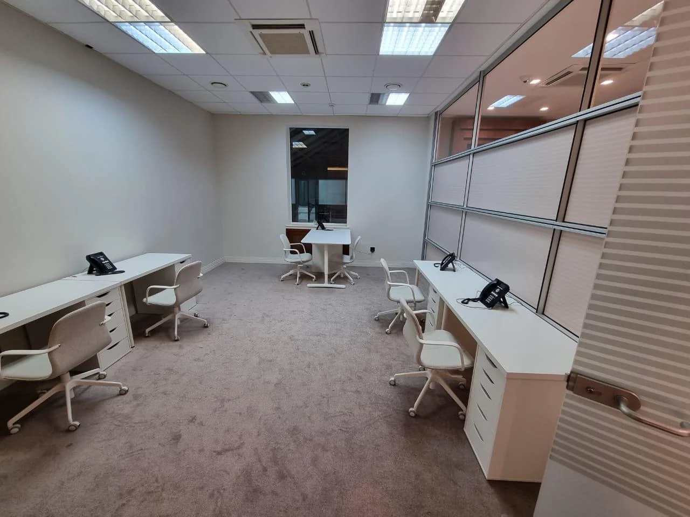

Жилые интерьеры
Зонирование, материалы, мебель и уют, соответствующий образу жизни.
Дизайн квартир, домов, ресторанов и общественных пространств. От первого сценария до подбора материалов, света и деталей.
Зонирование, материалы, мебель и уют, соответствующий образу жизни.

Продуманная навигация, экспозиция, свет и сценарии посещения.

Функциональные решения для кухни, гостиной и приватных комнат.

Интерьер и презентация бренда с учётом целевой аудитории.
Изучаем особенности помещения, назначение, привычки пользователей и желаемую атмосферу. Далее определяем состав проектных материалов и этапы работы.
Фотографии из предоставленного архива используются как визуальные материалы; авторство, принадлежность объекта и право на коммерческое использование уточняются перед публичным запуском.
Пришлите исходные данные, местоположение и ориентировочные сроки. Стоимость и состав работ определяются после обсуждения.